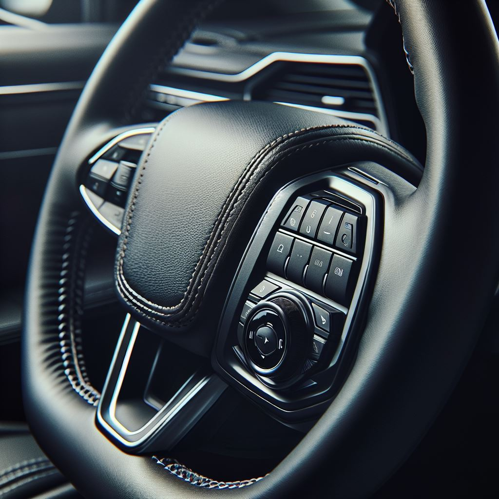

Bedieningscomponenten
Als u een beperking heeft aan (een van) uw armen, dan kan het lastig zijn om een auto te besturen. Bierman kan verschillende auto aanpassingen maken, waardoor u veilig de controle over het stuur houdt, en tegelijkertijd de bedieningscomponenten kan bedienen. Aanpassingen die Bierman kan maken op het gebied van de bedieningscomponenten, zijn:
Stuurbediening op maat
Een handige oplossing voor diverse functies is het integreren van bedieningscomponenten direct op het stuur. Met een compacte stuurknop, die fungeert als een soort afstandsbediening, heb je toegang tot bijvoorbeeld de richtingaanwijzer, verlichting en ruitenwissers. Dit maakt het rijden makkelijker en zorgt voor een intuïtieve bediening.
Hendel over het stuur
Soms is een eenvoudige aanpassing de beste oplossing. Een hendel die over het stuur wordt geplaatst, biedt een gemakkelijke manier om richtingaanwijzers en grootlicht te bedienen. Deze kan naar links of rechts worden verschoven, afhankelijk van de behoefte, waardoor u weer volledige controle heeft zonder dat het u veel moeite kost.
Verplaatsing van het contactslot en schakelaars
Daarnaast kan Bierman schakelaars of het contactslot verplaatsen naar de andere kant van het stuur, zodat ze bereikbaar blijven. Of dit nu links of rechts van de stuurkolom is, Bierman past de bediening aan op uw persoonlijke situatie.